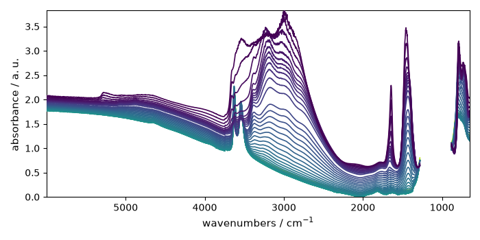
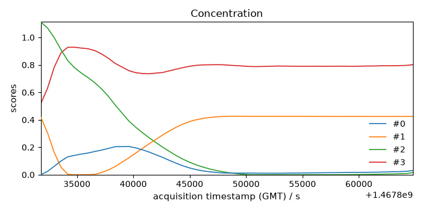
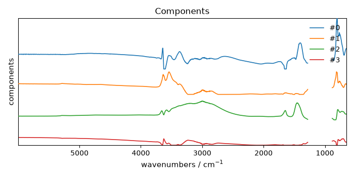

Note
Go to the end to download the full example code.
NMF analysis example
Import the spectrochempy API package
import spectrochempy as scp
Prepare the dataset to NMF factorize
Here we use a FTIR dataset corresponding the dehydration of a NH4Y zeolite and recorded in the OMNIC format.
dataset = scp.read_omnic("irdata/nh4y-activation.spg")
Mask some columns (features) which correspond to saturated parts of the spectra. Note that we use float number for defining the limits for masking as coordinates (integer numbers would mean point index and s would lead t incorrect results)
dataset[:, 882.0:1280.0] = scp.MASKED
Make sure all data are positive. For this we use the math functionalities of NDDataset
objects (min function to find the minimum value of the dataset
and the - operator for subtrating this value to all spectra of the dataset.
Plot it for a visual check
_ = dataset.plot()

Create a NMF object
As argument of the object constructor we define log_level to "INFO" to
obtain verbose output during fit, and we set the number of component to use at 4.
Fit the model
violation: 1.0
violation: 0.14017421024501972
violation: 0.06158195065493241
violation: 0.03477774452872504
violation: 0.02315591268977687
violation: 0.01628956483660734
violation: 0.011732197722809893
violation: 0.009261179153190092
violation: 0.007770502529914372
violation: 0.006957471610159015
violation: 0.006457414370354873
violation: 0.006191115125282007
violation: 0.006057238974457668
violation: 0.006000777806339457
violation: 0.005868357891308829
violation: 0.005802918028534004
violation: 0.005772367658829847
violation: 0.005756947971778018
violation: 0.005733332889918915
violation: 0.005700606624645042
violation: 0.005667827078790905
violation: 0.005587736630048254
violation: 0.005529135183166965
violation: 0.005460760674075987
violation: 0.005375194673451779
violation: 0.0052880544420751095
violation: 0.005203284939611637
violation: 0.00511026993184544
violation: 0.005004969613317398
violation: 0.004889401944567049
violation: 0.004778610916794581
violation: 0.004657040705272594
violation: 0.004527642308383171
violation: 0.0043937174771748085
violation: 0.004267124138925866
violation: 0.004133928133016161
violation: 0.004012755928138699
violation: 0.003891465351926824
violation: 0.003765260270042827
violation: 0.0036375148218629767
violation: 0.0035147101661544716
violation: 0.00339651383035827
violation: 0.0032925205579807295
violation: 0.0031941648132723013
violation: 0.003104947029333563
violation: 0.0030221674035499227
violation: 0.0029389646390339795
violation: 0.0028561158500457757
violation: 0.0027738912186800998
violation: 0.0026927116687369417
violation: 0.0026129548289079213
violation: 0.0025351644702122484
violation: 0.002458740363438228
violation: 0.0023842026907910764
violation: 0.002313303909478511
violation: 0.00224373674348102
violation: 0.0021751169925786516
violation: 0.00210840944909244
violation: 0.0020436678052479203
violation: 0.0019806643593506482
violation: 0.0019243270194360949
violation: 0.0018713261632056228
violation: 0.0018195678200697409
violation: 0.001769274901286523
violation: 0.0017204657491190806
violation: 0.0016731692686997482
violation: 0.0016274950351471617
violation: 0.0015839173329699132
violation: 0.0015418960309270596
violation: 0.0015014385431317099
violation: 0.0014629272012160186
violation: 0.0014262081321621263
violation: 0.0013907597658090584
violation: 0.0013601582805157775
violation: 0.0013328464824004895
violation: 0.0013065923988233915
violation: 0.0012813357494812101
violation: 0.0012569657401120583
violation: 0.0012363658727398688
violation: 0.0012190114699547649
violation: 0.0011992116544500562
violation: 0.001177562262451343
violation: 0.0011582609085415126
violation: 0.001138941592362975
violation: 0.001119912492936425
violation: 0.0011006754884539942
violation: 0.001083277704027774
violation: 0.001066136369230501
violation: 0.0010491933694700912
violation: 0.0010318244102608281
violation: 0.0010150792321236514
violation: 0.0009988201809298836
violation: 0.0009841318528818488
violation: 0.0009699922960876401
violation: 0.0009545966012006079
violation: 0.0009396363331386501
violation: 0.0009266599168144153
violation: 0.0009140262172601182
violation: 0.0009015875006377409
violation: 0.0008902182357103502
violation: 0.00087804993118698
violation: 0.0008660457470922522
violation: 0.0008543517499941823
violation: 0.000842870600328901
violation: 0.0008315536804370117
violation: 0.0008208847158800833
violation: 0.0008104269807767488
violation: 0.0007997522484738743
violation: 0.0007893350738955038
violation: 0.000779132660791362
violation: 0.000769141439001775
violation: 0.0007597179067850311
violation: 0.0007504652538891799
violation: 0.0007412456856971481
violation: 0.0007322966170538274
violation: 0.0007235915691682724
violation: 0.0007151920055397061
violation: 0.0007069372346701754
violation: 0.0006987637535250778
violation: 0.0006907733550825521
violation: 0.0006830298779798209
violation: 0.0006754181243925798
violation: 0.0006679795936492416
violation: 0.0006606893398229164
violation: 0.0006536091296351513
violation: 0.0006466641120994293
violation: 0.0006399762615473254
violation: 0.0006335488650771084
violation: 0.0006273957420689981
violation: 0.0006215236000712401
violation: 0.0006161518203758518
violation: 0.000611391815177314
violation: 0.000607125173613461
violation: 0.0006030938520871026
violation: 0.0005992255771887471
violation: 0.0005955122189367518
violation: 0.0005919356405960481
violation: 0.0005884735105286803
violation: 0.0005851626197888813
violation: 0.0005819472966806168
violation: 0.0005788624242480403
violation: 0.0005759087479598453
violation: 0.0005730546137308245
violation: 0.000570296860098533
violation: 0.0005676053787181306
violation: 0.000565017678517245
violation: 0.0005624480584369651
violation: 0.000559928147104649
violation: 0.0005574208102721514
violation: 0.0005549930907515654
violation: 0.0005526263090685497
violation: 0.0005503237863511548
violation: 0.0005480875748005588
violation: 0.0005458976082892461
violation: 0.0005437570853969752
violation: 0.0005416726314726759
violation: 0.0005396329582222361
violation: 0.0005376381718607368
violation: 0.000535862885080837
violation: 0.0005342566446344359
violation: 0.0005327134944356626
violation: 0.0005311700256181009
violation: 0.000529637490174765
violation: 0.0005281469649346843
violation: 0.0005266549474162456
violation: 0.0005251860718897295
violation: 0.0005237318107589668
violation: 0.0005222955570665629
violation: 0.0005208942964237287
violation: 0.0005195265168841441
violation: 0.0005181813428114214
violation: 0.0005168846752736937
violation: 0.0005156608680269305
violation: 0.0005144616554312077
violation: 0.000513289168819008
violation: 0.0005121515266404312
violation: 0.0005110364330894202
violation: 0.0005099447315065799
violation: 0.0005088753613793888
violation: 0.0005078236610582019
violation: 0.0005067909112021387
violation: 0.0005057740763558623
violation: 0.0005047767175616009
violation: 0.0005037958933646903
violation: 0.000502822212927852
violation: 0.0005018650428481909
violation: 0.0005009224423799323
violation: 0.0004999974962487118
violation: 0.0004990872395198525
violation: 0.0004981962000747117
violation: 0.0004973147318191884
violation: 0.0004964417296742771
violation: 0.0004955753197878664
violation: 0.0004946901218457252
violation: 0.0004938210437306534
violation: 0.0004929673596844257
violation: 0.0004921226355846256
violation: 0.0004912871202791976
violation: 0.000490459652853822
violation: 0.0004896376456529166
/home/runner/work/spectrochempy/spectrochempy/.venv/lib/python3.13/site-packages/sklearn/decomposition/_nmf.py:1723: ConvergenceWarning: Maximum number of iterations 200 reached. Increase it to improve convergence.
warnings.warn(
Get the results
The concentration \(C\) and the transposed matrix of spectra \(S^T\) can be obtained as follow
C = model.transform()
St = model.components
violation: 1.0
violation: 0.2781188101128509
violation: 0.21103839273441916
violation: 0.1636589757375494
violation: 0.12638124502857304
violation: 0.09689398092858033
violation: 0.07386553913526493
violation: 0.05726304883639136
violation: 0.04639710696895094
violation: 0.037762701010724285
violation: 0.03032467155964849
violation: 0.024000077998569846
violation: 0.01870505431885569
violation: 0.01428242709162825
violation: 0.010676123451468811
violation: 0.00801653482738577
violation: 0.006238616114828248
violation: 0.005124394633030096
violation: 0.004490757479656501
violation: 0.004053115751123361
violation: 0.003744302603668825
violation: 0.0034289628116608343
violation: 0.003032319034755959
violation: 0.0027272537391467974
violation: 0.002386505694047032
violation: 0.002085162862784046
violation: 0.001769748469516269
violation: 0.001492571627285773
violation: 0.0012488601974045218
violation: 0.0010438675111377794
violation: 0.0008573236692762519
violation: 0.0006991377766200855
violation: 0.0005706218431927084
violation: 0.00046362862409556575
violation: 0.00037487235479901715
violation: 0.0003032579084427473
violation: 0.00024636638593843744
violation: 0.0001982580479040816
violation: 0.00015827733519299095
violation: 0.00012439075792816133
violation: 9.611089606617574e-05
Converged at iteration 42
Plot results
_ = C.T.plot(title="Concentration", colormap=None, legend=C.k.labels)


# Uncomment the following line to display all figures when running the script
# directly with Python.
#
# scp.show()
Total running time of the script: (0 minutes 1.051 seconds)